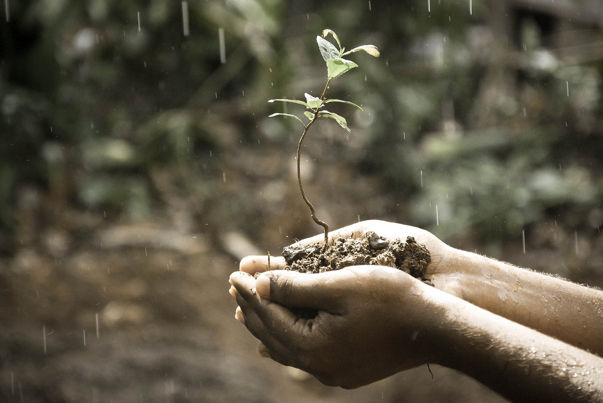

<!-- ======= About Section ======= -->
<section id="about" class="about">
  <div class="container" data-aos="fade-up">

    <div class="row gy-4" data-aos="fade-up">
      <div class="col-lg-4">
        
      </div>
      <div class="col-lg-8">
        <div class="content ps-lg-5">
          <!-- <h3>Voluptatem dignissimos provident quasi</h3> -->
          <p>
            We are an enterprise providing rainwater harvesting and groundwater investigation services. Rainwater harvesting is our key focus field of working.
          </p>
          <p>
            From our establishment in 2010 till date we have helped to generate annual rainwater harvesting capacity of more than 1300 lac litres across industrial, institutional and residential segments with more than 120 satisfied customers and are continuously striving for more.
          </p>
          <p>
            We are always updating our working pattern, services and techniques in order to provide efficient solutions to customers. Our Mission is <i>‘Harvesting Rains for a Better World’</i> and thus to strive towards self-reliance in water availability.
          </p>
          <!-- <ul>
            <li><i class="bi bi-check-circle-fill"></i> Ullamco laboris nisi ut aliquip ex ea commodo consequat.</li>
            <li><i class="bi bi-check-circle-fill"></i> Duis aute irure dolor in reprehenderit in voluptate velit.</li>
            <li><i class="bi bi-check-circle-fill"></i> Ullamco laboris nisi ut aliquip ex ea commodo consequat.</li>
          </ul> -->
        </div>
      </div>
    </div>

  </div>
</section><!-- End About Section -->